概要
地域共通クーポン の電子クーポンを使いたいのに、使える店舗が分かりづらい！と思ったことはありませんか？ GoToFix は GoToトラベル地域共通クーポン取扱店舗検索マップ に、電子クーポンに対応しているかどうかをフィルタリングできる機能を追加します:
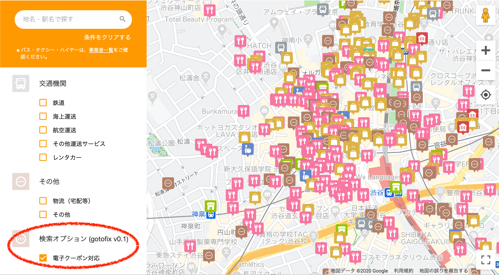
GoToトラベル事業 を利用して旅行した場合、旅行代金の 35% が給付され、旅行代金の 15% 分の地域共通クーポンが交付されます。地域共通クーポン は紙クーポンもしくは電子クーポンとして配布されますが、電子クーポンは対応店舗が少なく、利用しにくいことが指摘されています。どちらの種類のクーポンが配布されるかは、旅行会社および予約方法に依存し、旅行者が自由に決めることはできません。
地域共通クーポンを利用できる店舗は、GoToトラベル地域共通クーポン取扱店舗検索マップ で確認することができます。しかし、このマップでは電子クーポンに対応している店舗を探すことが難しいです。そこで、GoToFix は地域共通クーポン取扱店舗検索マップに電子クーポンに対応しているかどうかをフィルタリングできる機能を追加します。
なお、GoToトラベル事業を利用するには、GoToトラベル事業のご利用に当たっての遵守事項 に同意した上で新しい旅のエチケット を実践する必要があります。
使い方
GoToトラベル地域共通クーポン取扱店舗検索マップに電子クーポンに対応した店舗をフィルタリングできる機能を追加する方法を示します
事前準備
GoToFix による機能を追加するための「ブックマークレット」の登録作業を行います。まず、下のソースコードをコピーしてください。
javascript:(function()%7Bif(window.gotofix)alert("gotofix: すでにスクリプトが読み込まれています");else{window.gotofix={},window.gotofix.onlye=!1;const o=document.getElementById("sl-root"),t=angular.element(o).injector().get("configService"),e=angular.element(o).injector().get("pointService");window.gotofix.testFilter=t.testFilter,t.testFilter=function(o,t,e,i,n){return window.gotofix.onlye?"1"===o["電子クーポン"]&&window.gotofix.testFilter(o,t,e,i,n):window.gotofix.testFilter(o,t,e,i,n)};let i='\n <div class="conditions-wrapper"> <h4> <img class="icon" alt="検索オプション (gotofix)" title="検索オプション (gotofix)" src="/static/maps/gotocp/images/icon_other.png"> <span>検索オプション (gotofix v0.1)</span> </h4> <ul class="conditions"> <li id="gotofix-ui-onlye"> <i class="material-icons theme-color" >check_box_outline_blank</i> <div class="name">電子クーポン対応</div> </li> </ul> </div> ';const n=document.createElement("div");n.innerHTML=i,n.id="gotofix-ui",document.querySelector("#sl-root .option-box").appendChild(n),document.getElementById("gotofix-ui-onlye").addEventListener("click",(()=>{window.gotofix.onlye?(n.querySelector("i").textContent="check_box_outline_blank",window.gotofix.onlye=!1,e.showMarkers()):(n.querySelector("i").textContent="check_box",window.gotofix.onlye=!0,e.showMarkers())})),document.querySelector("#sl-root .tab-switch li:first-child").addEventListener("click",(()=>{n.style.display="block"})),document.querySelector("#sl-root .tab-switch li:last-child").addEventListener("click",(()=>{n.style.display="none"})),alert("gotofix: スクリプトを読み込みました")}%7D)()
コピーできたら、これをブックマークとして登録してください。
ブックマークレットの登録方法
予め 事前準備 を読みソースコードをコピーしておいてください
iPad (Chrome)
1. 適当なページをブックマークします。共有メニューからブックマークをタップしてください
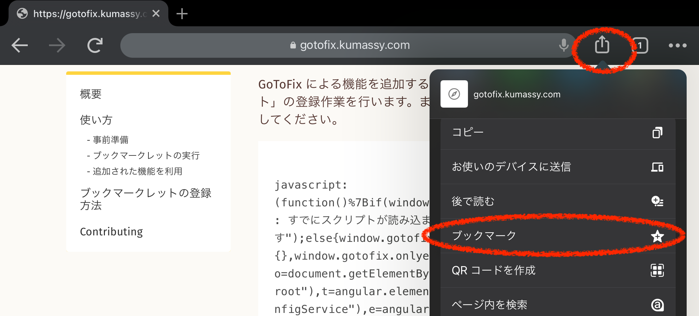
2. 再度共有メニューを開き、ブックマークを編集をタップしてください
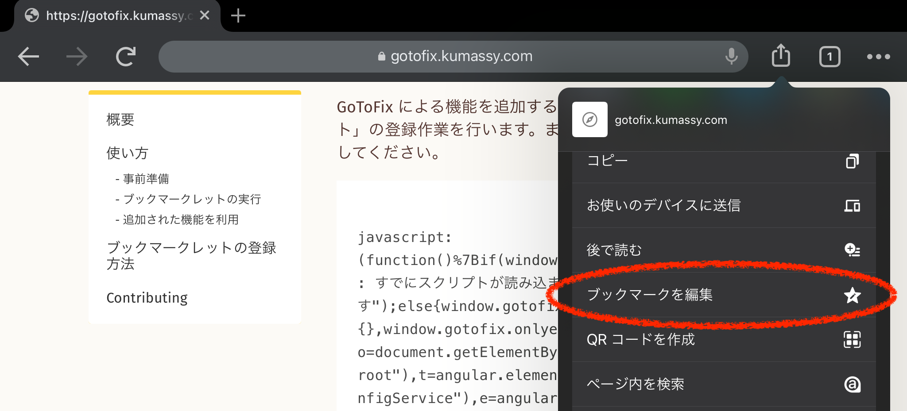
3. 名前を適当に変更し、URL の部分にコピーしたソースコードを貼り付けてください
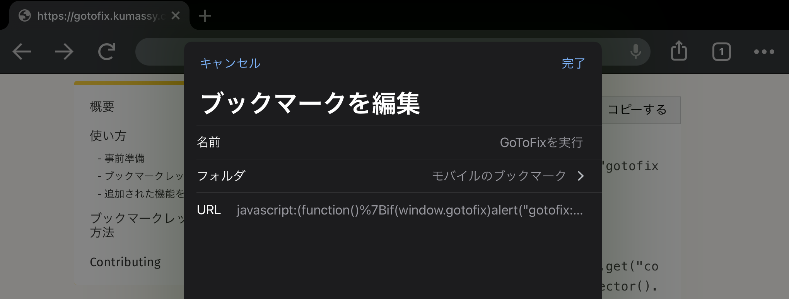
Android (Chrome)
1. 適当なページをブックマークします。ハンバーガーメニューを開き、星マークをタップしてください
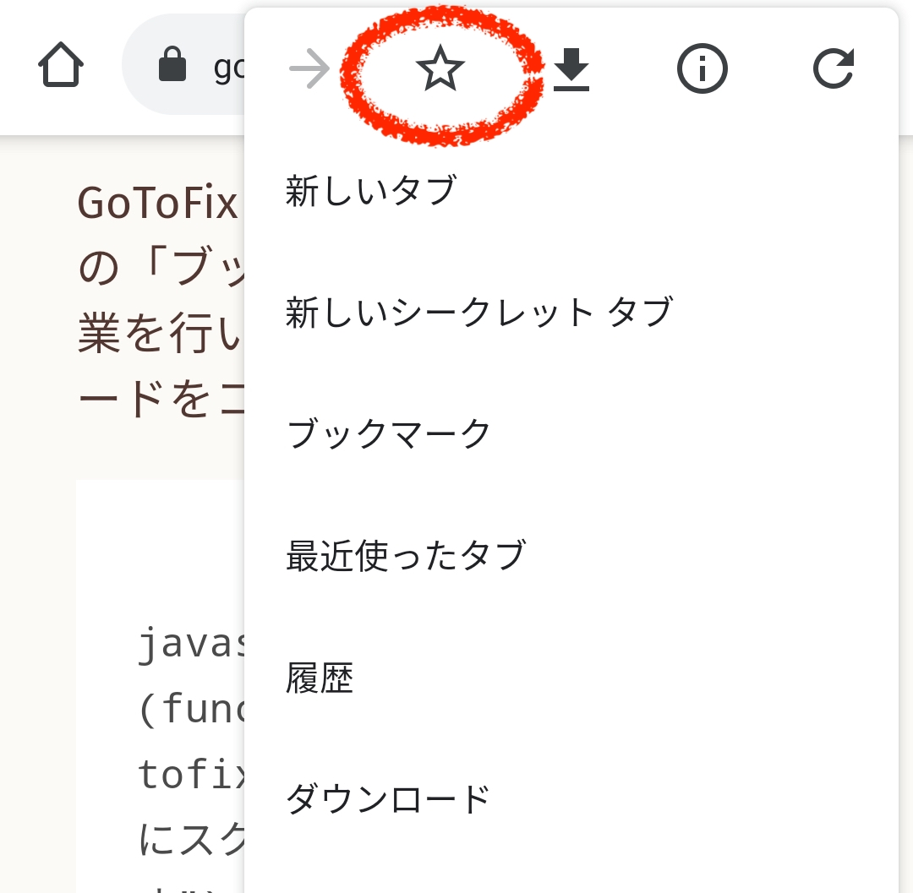
2. 再度ハンバーガーメニューを開き、星マークをタップしてください
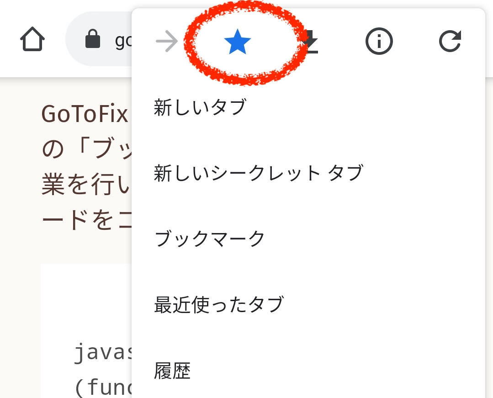
3. 名前を適当に変更し、URL の部分にコピーしたソースコードを貼り付けてください
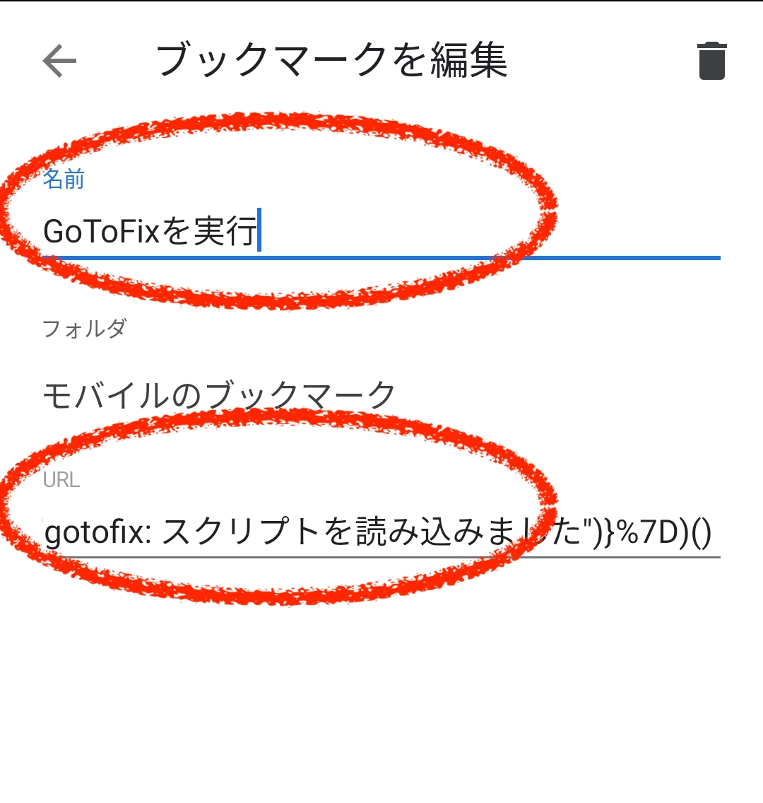
PC (Chrome)
1. 適当なページをブックマークします。アドレスバーにある星マークを選択してください
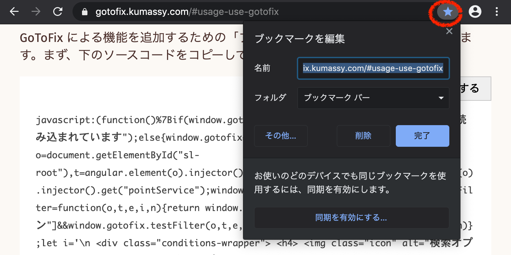
2. 再度星マークを選択し、その他をクリックします
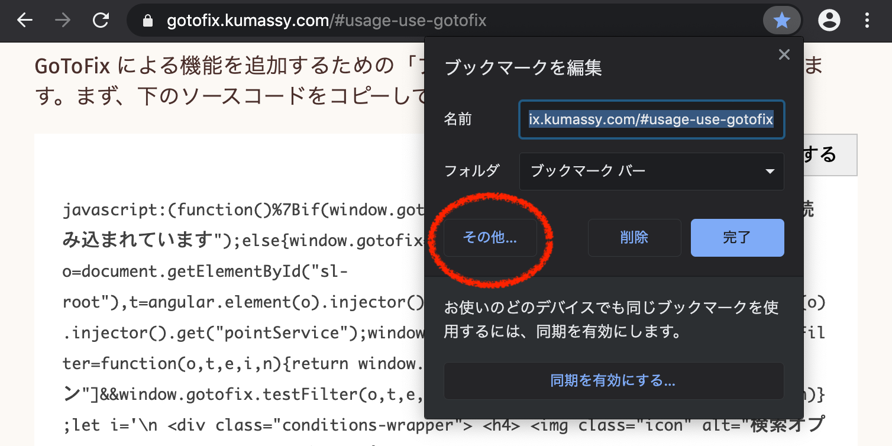
3. 名前を適当に変更し、URL の部分にコピーしたソースコードを貼り付けてください
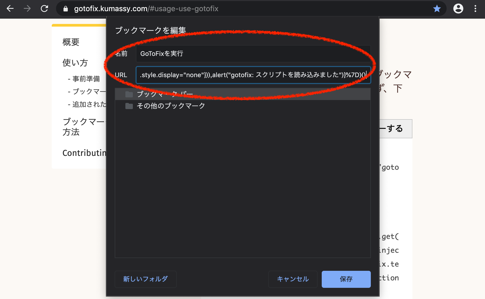
PC (FireFox)
1. 適当なページをブックマークします。アドレスバーにある星マークをクリックして完了をクリックしてください
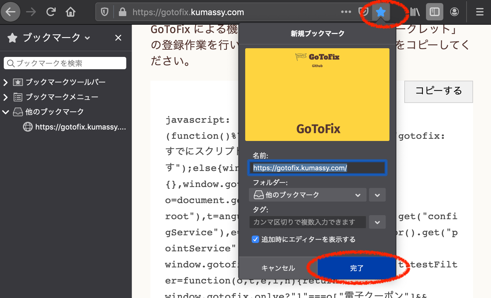
2. ブックマーク一覧から先程登録したブックマークを **右クリック** し、情報を見るをクリックしてください
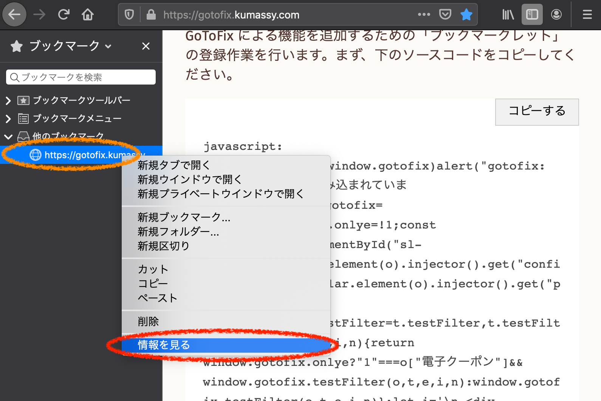
3. 名前を適当に変更し、URL の部分にコピーしたソースコードを貼り付けてください
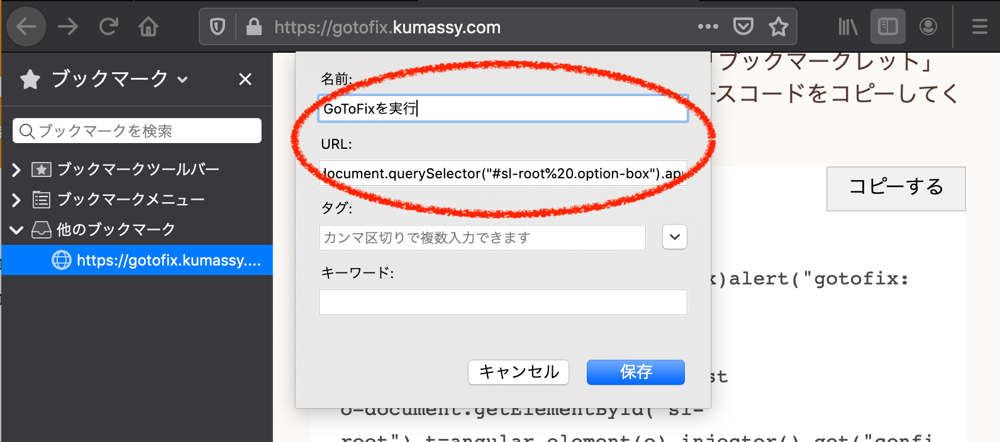
ブックマークレットの実行
登録しておいた GoToFix ブックマークレットを実行します
iPad (Chrome)
Android (Chrome)
PC (Chrome)
PC (FireFox)
追加された機能を利用
ブックマークレットを実行すると、絞り込み検索に「検索オプション (gotofix)」が現れます。チェックマークを入れると、電子クーポンに対応した店のみ表示されます。
Contributing
コントリビューションを広く受け付けています
- New issues (feature requests, bug reports, questions, ideas, ...)
- Pull requests (documentation improvements, code improvements, new features, ...)